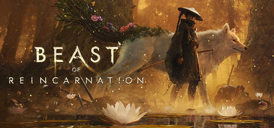
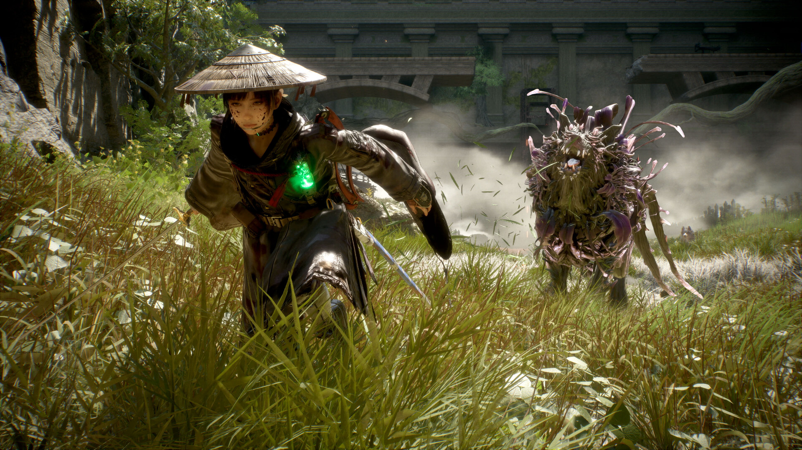
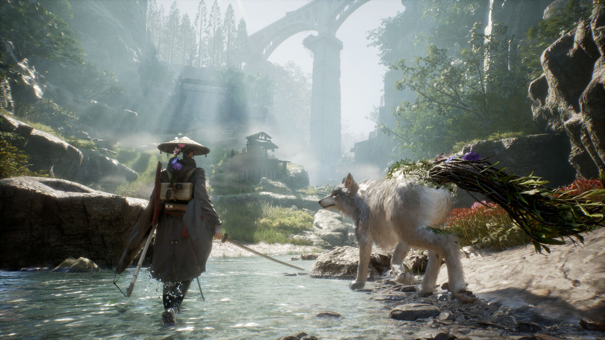
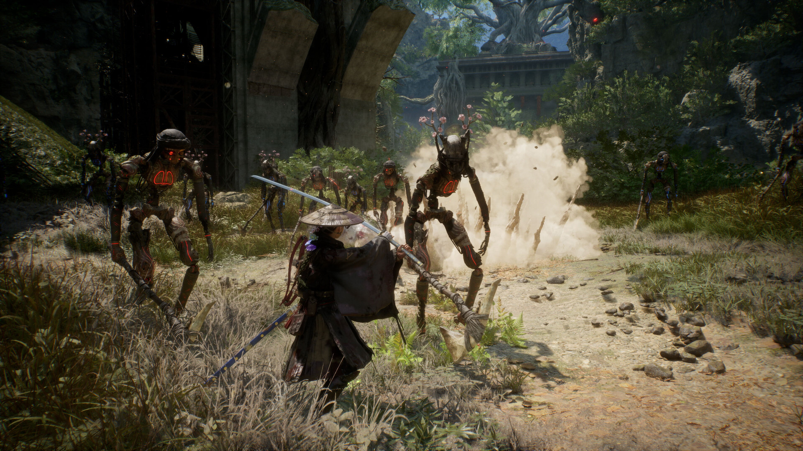

Beast of Reincarnation(비스트 오브 리인카네이션) 출시일 가격 정리, 게임프리크 신작인데 소울라이크가 아니라고?
스팀 상점 페이지를 열면 인기 태그에 'Souls-like'가 박혀 있는데, 정작 해외 매체들은 "소울라이크가 아니다"라는 제목을 달았습니다. 어느 쪽 말이 맞는 건지 궁금해서 공식 페이지랑 인터뷰 보도를 하나씩 뒤져봤는데요, 결론부터 말하면 양쪽 다 나름의 근거가 있고 층위가 다른 얘기였습니다.
게임프리크가 포켓몬 밖에서 처음 내놓는 AAA 타이틀 Beast of Reincarnation - 한국어 스팀 페이지에는 '윤회의 짐승'이라는 정식 한국어 제목으로 올라와 있습니다 - 을 발매 전에 알아두면 좋을 정보로 정리해보겠습니다.

엠마와 쿠, 1인 1견 콤비가 대표 이미지로 걸려 있습니다.
이미지 출처: Steam 공식 상점 페이지
1. 출시일ㆍ가격ㆍ개발사부터 정리하면
Beast of Reincarnation은 한국 시간 기준 2026년 8월 4일, 스팀(PC)ㆍPS5ㆍXbox로 동시에 정식 출시됩니다. 여기서 헷갈리기 쉬운 게 스팀 상점 페이지 날짜인데요, 스팀은 접속한 사람의 시간대에 맞춰 날짜를 바꿔서 보여줍니다. 주인장이 직접 확인해 보니 한국 시간대로 접속하면 '8월 4일', 시간대 정보 없이 접속하면 '8월 3일'로 표시되더라고요. 그러니 스팀에서 8월 3일로 보이더라도 한국에서 실제로 플레이할 수 있게 되는 건 8월 4일입니다.
| 항목 | 내용 |
|---|---|
| 한국어 제목 | 윤회의 짐승 (스팀 한국어 페이지 표기) |
| 출시일 | 2026년 8월 4일 (한국 시간 기준) |
| 스탠다드 에디션 | ₩75,800 |
| 디럭스 에디션 | ₩85,800 (스탠다드 대비 +₩10,000) |
| 개발사 | Game Freak(게임프리크) |
| 배급사 | Fictions(픽션스) |
| 플랫폼 | PC(Steam), PlayStation 5, Xbox Series X|S |
| 장르 | 액션ㆍ어드벤처ㆍRPG |
※ 2026년 7월 27일 기준, Steam 공식 상점 페이지(한국어)ㆍPlayStation 공식 페이지ㆍXbox 공식 페이지 표기 기준입니다. 가격은 변동될 수 있습니다.
눈여겨볼 건 개발사인데요, Game Freak면 포켓몬 시리즈 만드는 그 회사가 맞습니다. 포켓몬이 아닌 신규 AAA 액션 타이틀은 이번이 처음이라 그 자체로 화제가 되고 있고요. 게다가 Xbox Series X|S와 PC로는 Xbox Game Pass Ultimateㆍ PC Game Pass 데이원(발매 당일)으로도 즐길 수 있습니다.
참고로 이 프로젝트, 2020년부터 개발을 시작해서 2023년 5월엔 'Project Bloom'이라는 가제로 처음 공개됐던 오래 준비된 타이틀이더라고요. 엔진은 언리얼 엔진 5로 알려져 있는데, 트레일러 비주얼 퀄리티를 보면 왜 개발 기간이 이렇게 오래 걸렸는지 납득이 가더군요.
2. 소울라이크 태그와 디렉터 발언, 진짜는 이렇습니다
결론부터 말씀드리면 둘 다 사실입니다 — 스팀 유저 태그엔 'Souls-like'가 있고, 정작 디렉터가 인터뷰에서 강조한 얘기는 결이 좀 다르거든요.
스팀 인기 태그에는 'Souls-like'가 붙어 있습니다. 이 인터뷰를 다룬 해외 매체(wccftechㆍgamereactor)들은 '소울라이크가 아니다'라는 제목으로 소개했는데, 정작 디렉터 고타 후루시마 본인이 패미츠 인터뷰(올해 초 보도)에서 강조한 건 난이도ㆍ접근성 얘기였습니다 — "액션 게임을 잘 못하는 사람도 즐길 수 있게 만들었다", "낮은 난이도를 추천한다", "쿠의 도움으로 나름의 방식을 찾아 즐길 수 있을 것"이라는 취지고요.
이 인터뷰를 정리한 gamereactor 기사는 여기에 몇 가지 특징을 더 짚었는데, 후루시마 감독의 직접 발언이라기보다는 기자가 요약한 문장에 가깝습니다(같은 기사가 "이 요소들이 전부 소울라이크 구조에서 멀어지게 하는 건 아니다"라는 단서도 달았고요). 실제로 같은 매체가 이달 내놓은 후속 기사에서는 "오픈월드는 아니지만 자유롭게 탐험 가능한 구역이 있다"고 완화해서 설명하기도 했습니다. 여기에 더해 이달 Game Informer와의 인터뷰에서 나온 얘기로는 또 다른 특징 두 가지가 확인되는데, 이 내용은 ixbt.games가 보도했습니다. 정리하면 이렇습니다.
- 난이도를 선택할 수 있다 — "액션 게임을 잘 못하는 사람도 즐길 수 있게 만들었다"는 취지 (패미츠 인터뷰 보도 기준)
- 선형(리니어) 진행에 가깝다 — 다만 자유롭게 탐험 가능한 구역도 있다는 설명도 있음 (해외 매체 정리)
- 온라인ㆍ멀티플레이 요소가 없다 (해외 매체 정리)
- 쓰러뜨린 적이 다시 부활하지 않는다 (7월 Game Informer 인터뷰)
- 소울라이크 특유의 사망 페널티가 없다 (7월 Game Informer 인터뷰)
그렇다고 전투 자체가 물러 보이는 건 또 아닙니다. 뒤에서 다시 짚겠지만 전투는 세키로 쪽 영향을 받았다는 평가가 나오거든요. 그러니까 "장르 이름표"와 "실제 설계 철학"이 다른 층위 얘기라고 보시면 됩니다. 태그만 보고 하드코어 소울라이크를 기대했다가는 살짝 김샐 수도 있고, 반대로 소울라이크라 겁먹었던 분들한텐 오히려 반가운 소식일 수 있고요. 결국 후루시마 감독이 하고 싶었던 얘기는 "어렵고 진입장벽 높은 게임"이 아니라 "누구나 끝까지 즐길 수 있는 액션 게임"을 만들었다는 쪽에 가깝습니다.
3. 엠마와 쿠, 오염된 4026년 일본을 걷다
무대는 서기 4026년, 오염(부패)으로 황폐해진 일본입니다.
주인공은 질병으로 사회에서 배척당한 '엠마'와 부정한 기운에 오염된 개 '쿠'입니다(스팀 한국어 상점 소개문 표기). 이 둘이 인류의 유일한 희망이라는 설정이고요, 1인 1견 콤비가 함께 여정을 떠나는 액션 RPG입니다. 이동 방식도 독특한데요, 식물을 조작해서 이동하는 고유 기믹이 있다고 알려져 있습니다. 트레일러를 보면 폐허가 된 도시와 자연이 뒤엉킨 비주얼이 꽤 인상적이더라고요.

풀숲을 달리는 엠마 오른쪽으로, 꽃과 덩굴로 뒤덮인 짐승형 적이 마주 서 있습니다.
이미지 출처: Steam 공식 상점 페이지
4. 오픈월드는 아니고, 손제작 스테이지 구조입니다
전통적인 오픈월드가 아니라, 손으로 제작한 대형 스테이지로 구성된 구조입니다.
| 항목 | 내용 | 출처 층위 |
|---|---|---|
| 월드 구조 | 오픈월드 아님 · 손제작 대형 스테이지 | 해외 매체 보도 |
| 스테이지 수 | 약 10개 | 해외 매체ㆍ팬 정리 |
| 스테이지 내 자유도 | 숨겨진 아이템ㆍ환경 퍼즐 등 탐험 요소 | 해외 매체ㆍ팬 정리 |
| 플레이타임 | 약 30시간 | 해외 매체ㆍ팬 정리 |
※ 스테이지 수ㆍ플레이타임은 공식 발표가 아니라 해외 매체와 팬 정리 자료에서 도는 수치입니다. 주인장이 Steamㆍ PlayStationㆍ Xbox 공식 페이지와 Xbox Wire 개발자 다이렉트 기사를 확인했는데, 세 공식 채널 어디에도 스테이지 수나 플레이타임을 못박은 문장은 없었습니다. 참고용으로만 보시고, 정확한 분량은 발매 후 확인하는 게 맞겠습니다.
구조 자체는 공식 소개에서도 읽힙니다. 스팀 한국어 상점 소개문에 "황무지에서 갑자기 숲이 나타나는 등 계속 변화하는" 월드라는 표현이 있어서, 판을 넓게 벌리기보다 구간마다 결을 바꾸는 설계로 보이거든요. 요즘 대작들이 오픈월드로 몸집만 불리다가 밀도는 헐거워지는 경우가 많은데, 이 게임은 반대 방향을 택한 셈이라 저는 오히려 이쪽이 궁금하네요.

엠마와 쿠가 스테이지를 가로지르는 장면입니다.
이미지 출처: Steam 공식 상점 페이지
5. 전투는 어떤 느낌일까
공식 발언은 아니지만, 해외 매체들은 이 게임의 전투를 다른 유명 액션 게임들과 견주고 있습니다.

붉은 문양이 도는 뼈대 형태의 적들에게 둘러싸인 장면입니다. 가운데 개체는 머리에 꽃가지가 돋아 있습니다.
이미지 출처: Steam 공식 상점 페이지
- Nier: Automata — 폐허가 된 세계의 정서적 분위기가 닮았다는 평가
- Sekiro: Shadows Die Twice — 패링ㆍ타이밍 중심 전투 감각이 닮았다는 평가
스팀 공식 소개문구에는 "실시간 전투와 턴제 전투 방식을 융합한 액션 RPG"라는 설명이 있습니다.
자주 묻는 질문
Q. 한국어는 지원되나요?
스팀 공식 지원 언어 목록에 한국어 자막이 포함돼 있습니다. 다만 음성 더빙은 영어ㆍ일본어 두 언어만 지원돼서, 한국어로는 자막으로 즐기게 될 것 같습니다. 프랑스어ㆍ독일어ㆍ스페인어ㆍ중국어 간체·번체 등도 자막으로 지원됩니다.
Q. 내 PC로 돌아갈까요? 요구사양이 어떻게 되나요?
스팀 공식 페이지 기준으로 최소 사양은 i5-8400 또는 라이젠 5 3600에 램 16GB, 그래픽은 GTX 1070(8GB) 또는 RX 580(8GB)입니다. 권장은 i7-12700K 또는 라이젠 7 5800X에 RTX 3060(12GB) 또는 RX 6700 XT(12GB)고요. 두 사양 모두 램 16GB에 저장공간 45GB가 필요하고, 특히 SSD가 필수로 적혀 있습니다. 최소 사양 쪽은 "1080p 낮은 옵션 40fps(DLSS 또는 FSR1 성능 모드)" 기준이라고 단서가 붙어 있으니, 참고해서 보시면 되겠습니다.